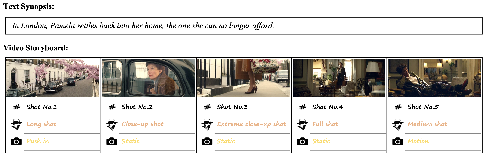
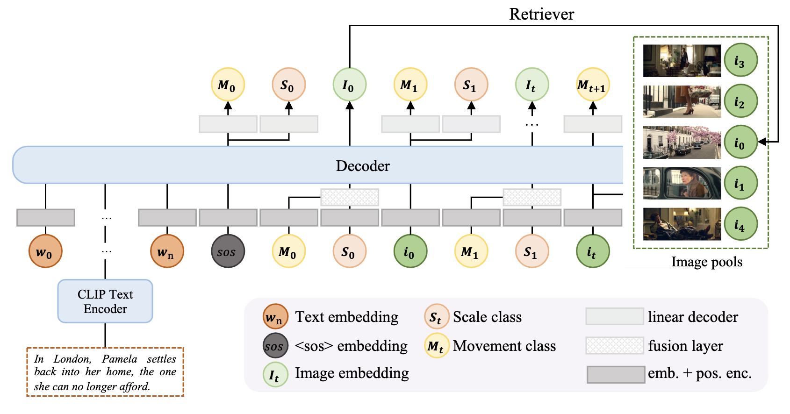
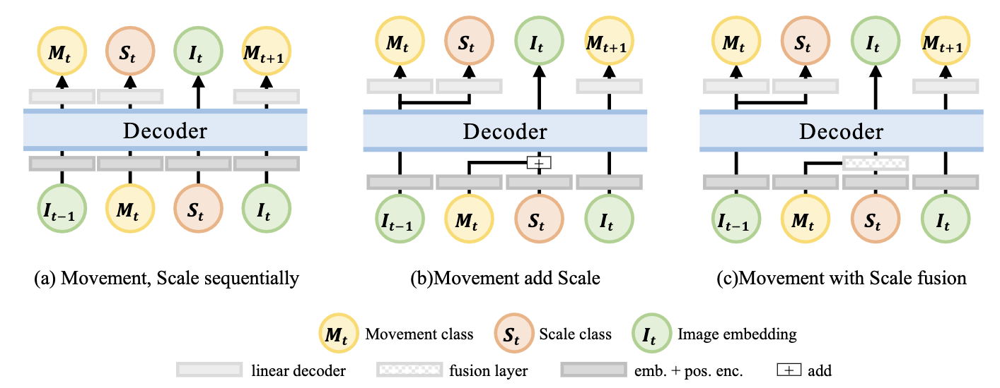
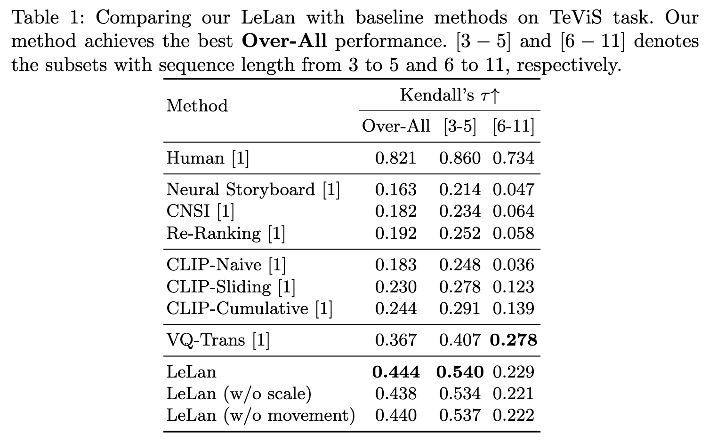

An example of Text Synopses to Video Storyboards (TeViS) task. A professional storyboard not only requires the association between text and images but also demands smooth transitions across shots. In this example, scale static attributes such as long and medium shots, and movement dynamic attributes such as static and push-in shots are some lens language, which is useful in creating a storyboard with smooth transition.
Text to Video Storyboard (TeViS) task aims to retrieve or generate an ordered sequence of images as a video storyboard to visualize an input text synopsis. Although it is important for millions of amateurs to make videos and for AI models to generate high-quality longer videos, it is challenging to achieve smooth transitions across shots in addition to the cross-modal association between text and images. In this paper, we propose a new model called LeLan (Lens Language) that explicitly uses lens language, specifically movement and scale of shots, to enhance the smoothness of transitions across shots while ensuring cross-modal association between text and images. In our proposed model, we propose extracting lens static and dynamic attributes for shots/keyframes. Then we propose using a transformer decoder to explicitly predict the next lens attributes and then generate the next images in an auto-aggressive manner. We also experiment with different ways to combine two types of lens attributes. Experimental results over the public MovieNet-TeViS dataset indicate that our best model can significantly improve the effectiveness by 20\% over the state-of-the-art baseline in terms of Kendall's tau. Further analysis shows that our LeLan model can make the transition of storyboards, in particular those containing 3 to 5 keyframes, more smooth than the baselines.
Overview of our proposed LeLan model.

Variants of LeLan with different lens combination types.
Qualitative examples of different models for the ordering task on Movie-TeViS dataset.
